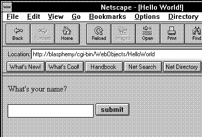
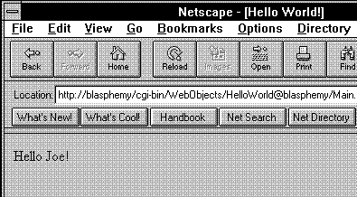

Table of Contents
Table of Contents
 Previous Section
Previous Section
Table of Contents
Previous Section
The Hello World application consists of two pages. Figure 5 shows the first page.

Figure 5 The First Page of Hello World
The presentation may vary slightly from browser to browser, but the page elements are the same no matter what Web browser you use. The first page contains a single input field into which you type your name. Clicking Submit opens a new page with a personalized greeting. For instance, typing "Joe" and clicking Submit opens a page similar to the one in Figure 6.

Figure 6 The Second Page of Hello World
The Hello World application has three simple requirements: get the name entered in the input field, dynamically generate the HTML required to display the message in the second page, and open the second page when Submit is clicked. These requirements can be stated more generally as:
 Next Section
Next Section